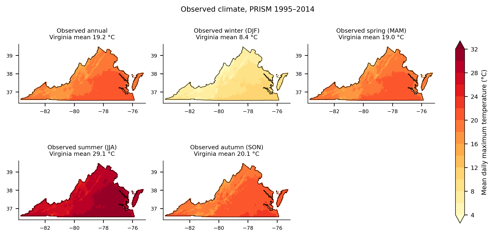
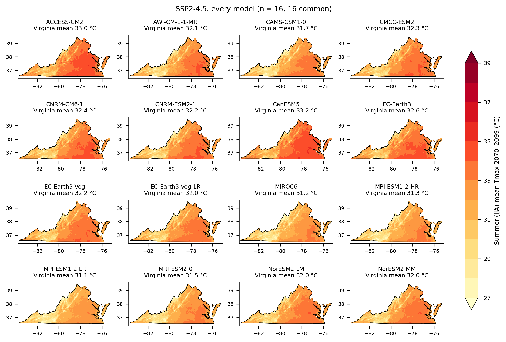
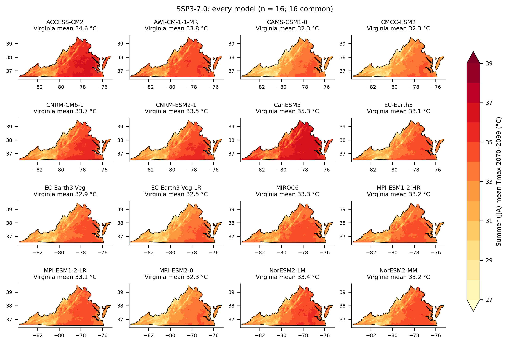
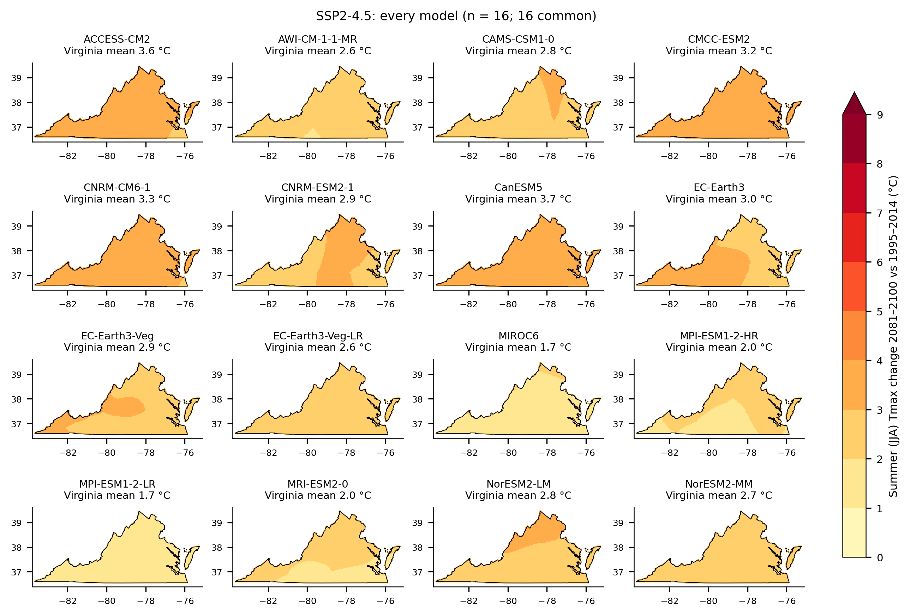
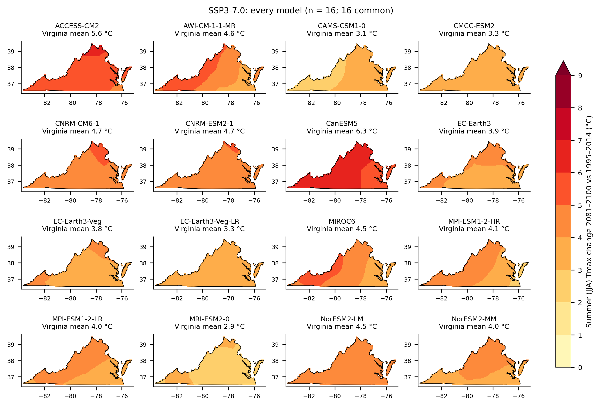
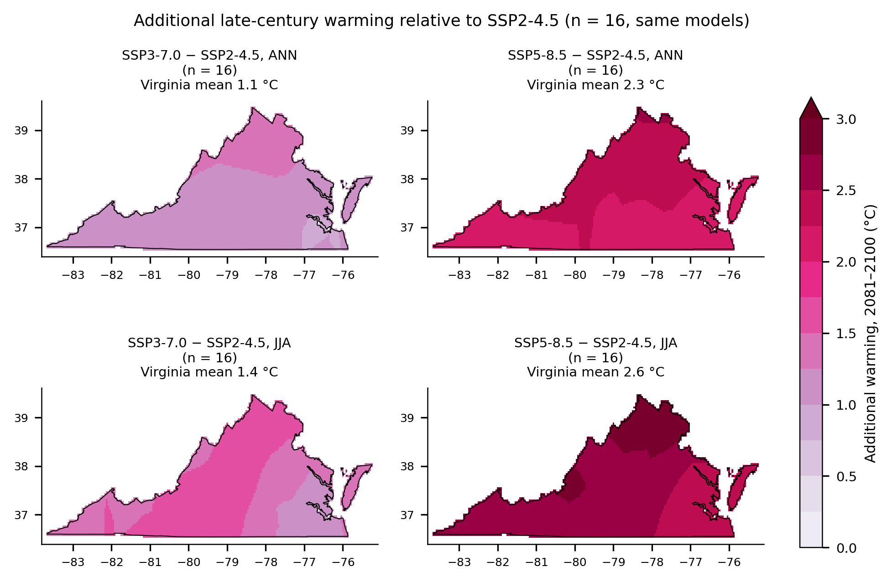
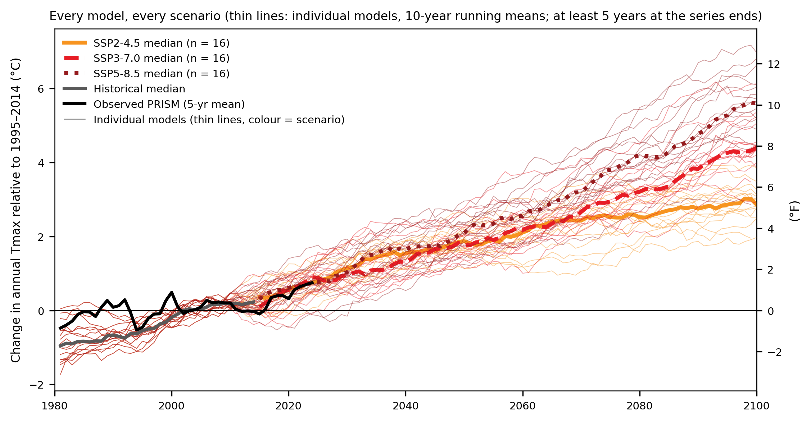
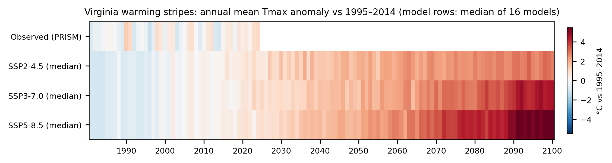
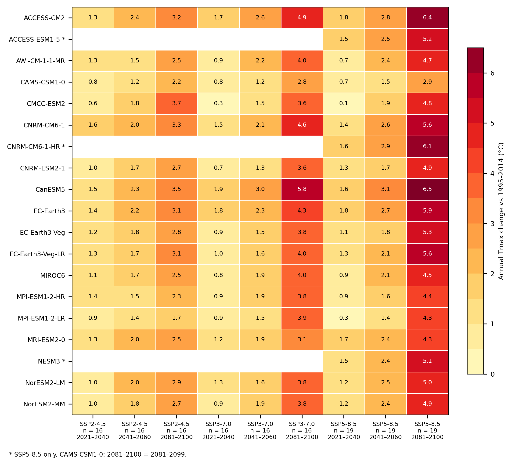

Figure pack v2: Virginia CMIP6 Tmax downscaling (52 figures)
Figure pack of the statistically downscaled CMIP6 daily maximum temperature dataset for Virginia (about 4 km, 2015–2100, module v4.1.1), 17 October 2026. Draft: the figures are checked, and the report that discusses them is in preparation.
- Models: the 16 models common to SSP2-4.5, SSP3-7.0 and SSP5-8.5. SSP5-8.5 has 19 models, and the 3 extra appear only where marked.
- Change: measured from each model's own bias-corrected 1995–2014. Periods are the IPCC AR6 periods unless a caption says otherwise.
- Ranges: 10th–90th percentile across the models (n given).
- Hot-day counts: observed PRISM 1995–2014 daily values shifted by each model's monthly change (delta method). The raw counts from the downscaled data are shown for comparison.
- Robustness hatching: follows the IPCC AR6 Atlas approach.
Each caption gives n, the baseline, the period, the method and the main limitations.
![Virginia domain and model grids. Boxes: coarse GCM cells inside the Virginia bounding box for three of the 16 common models with coarse, medium and fine grids (CanESM5, EC-Earth3-Veg-LR, EC-Earth3-Veg); dots: the 4 km anchor pixels nearest each coarse centre, where the downscaled value equals the bias-corrected model value. Shading: observed PRISM summer (JJA) mean daily maximum temperature 1995–2014 on the 4 km grid (6,646 Virginia pixels). Limitations: between anchors the 4 km detail comes from the observed PRISM structure (residual interpolation); holding the residual constant beyond the outermost coarse centres changes metric B by a median +0.000 °C (largest model CanESM5 +0.09 °C; single pixels up to 0.41 °C; ds_05).](D1_domain_and_model_grids.png)

![One day of the dataset (one model, n = 1, illustrative). (a) Bias-corrected ACCESS-CM2 field on its native grid for the hottest Virginia-mean day of July 2085 under SSP3-7.0; (b) the same day after downscaling to 4 km; (c) for reference, the observed hottest Virginia-mean day of 1995–2024 (PRISM). The downscaling adds observed 4 km spatial structure (terrain, coast) to the model's large-scale weather. Limitations: a single free-running model day, not a forecast; values above 48 °C late in the century are the raw models' own extreme days (raw maximum 50.20 °C, bias-corrected maximum 52.03 °C on coarse Virginia cells, ds_13) against an observed PRISM 1981–2024 maximum of 41.6 °C (E18), so late-century TXx comes from the hot models.](D3_single_day_coarse_vs_4km.png)


![Model-by-model maps, SSP5-8.5 (16 common models + 3): Summer (JJA) mean Tmax 2070–2099 (°C). Same colour scale in every panel and across the scenario galleries; differences between panels are differences between the driving GCMs. Bottom row: the 3 models run only for SSP5-8.5 (ACCESS-ESM1-5, CNRM-CM6-1-HR, NESM3), outside the 16-model comparisons. Period 2070–2099 is the summary-file period and differs from the AR6 2081–2100 of D5. Limitations: one run per model; CAMS-CSM1-0 ends in 2099, so its 2081–2100 is 2081–2099; CMCC-ESM2, CanESM5, NorESM2-LM and NorESM2-MM have no 29 February (365-day calendar).](D4_models_JJA_absolute_ssp585.png)


![Model-by-model maps, SSP5-8.5 (16 common models + 3): Summer (JJA) Tmax change 2081–2100 vs 1995–2014 (°C). Same colour scale in every panel and across the scenario galleries; differences between panels are differences between the driving GCMs. Bottom row: the 3 models run only for SSP5-8.5 (ACCESS-ESM1-5, CNRM-CM6-1-HR, NESM3), outside the 16-model comparisons. Change relative to each model's bias-corrected 1995–2014 (metric B). Limitations: one run per model; CAMS-CSM1-0 ends in 2099, so its 2081–2100 is 2081–2099; CMCC-ESM2, CanESM5, NorESM2-LM and NorESM2-MM have no 29 February (365-day calendar).](D5_models_JJA_change_ssp585.png)
![Comparison with observations over the overlap decade 2015–2024, Virginia mean, for each of the 16 common models (dots: product, one per scenario; dashed grey: median of the first scenario): annual mean Tmax, hottest day of the year (TXx) and days ≥ 35 °C, model minus PRISM; in the hot-day panel the coloured vertical lines are the delta-method medians (R2_hot_days.csv, delta method (headline, E16): observed PRISM 1995–2014 daily Tmax shifted by each model's monthly change (metric B), counted per pixel and per model, then the median of the 16 common models (ds_11, ds_24; R2_hot_days.csv)). Baseline of the bias correction 1981–2014; change metric baseline 1995–2014. Limitations: models are free-running, so decade differences include natural variability as well as model bias; the observed 2015–2024 summer (JJA) tail P99–P50 is 1.13 °C narrower than in 1981–2014, outside the 5–95 % range of random 10-year samples [-0.72, +0.55] °C (ds_10); the free-running models do not reproduce that decade, so the 2015–2024 model–observation gap in hot days is not a model tail shape; the annual mean difference is dominated by the ~0.3 °C calibration offset (after bias correction over 1981–2014 the models sit -0.43 °C vs observed in 1981–1994 and +0.30 °C in 1995–2014 (model drift +0.73 °C, positive in 15 of 16 models; ds_03)).](D6_evaluation_2015_2024.png)
![Projected change in annual mean daily maximum temperature, pixel-wise ensemble median of 16 common models (same models in every scenario), relative to each model's bias-corrected 1995–2014 (metric B), AR6 periods. Hatching: IPCC AR6 advanced approach (Cross-Chapter Box Atlas.1): γ = √2 × 1.645 × σ/√20, σ = standard deviation of each model's 20 linearly detrended bias-corrected 1995–2014 annual (seasonal) means (one member); robust where ≥ 66 % of models (11 of 16) exceed their γ and ≥ 80 % (13 of 16) agree with the sign of the median; diagonal = fewer than 66 % exceed γ (no robust signal), crossed = robust change but conflicting signs, no overlay = robust. Hatched share of the 6,646 Virginia pixels (diagonal / crossed): SSP2-4.5 2021–2040 0 % / 0 %; SSP2-4.5 2041–2060 0 % / 0 %; SSP2-4.5 2081–2100 0 % / 0 %; SSP3-7.0 2021–2040 0 % / 0 %; SSP3-7.0 2041–2060 0 % / 0 %; SSP3-7.0 2081–2100 0 % / 0 %; SSP5-8.5 2021–2040 0 % / 0 %; SSP5-8.5 2041–2060 0 % / 0 %; SSP5-8.5 2081–2100 0 % / 0 %. Colour scale shared by the annual, summer and winter figures. Limitations: CAMS-CSM1-0 ends in 2099, so its 2081–2100 is 2081–2099; CMCC-ESM2, CanESM5, NorESM2-LM and NorESM2-MM have no 29 February (365-day calendar); spring and November per-month QDM median error up to +0.125 °C late in the century, SSP5-8.5 2080–2099 (ds_04); the change field is smooth because the signal comes from the GCMs (100–250 km); holding the residual constant beyond the outermost coarse centres changes metric B by a median +0.000 °C (largest model CanESM5 +0.09 °C; single pixels up to 0.41 °C; ds_05); one run per model, equal weights.](M1_change_ANN.png)
![Projected change in winter (DJF) mean daily maximum temperature, pixel-wise ensemble median of 16 common models (same models in every scenario), relative to each model's bias-corrected 1995–2014 (metric B), AR6 periods. Hatching: IPCC AR6 advanced approach (Cross-Chapter Box Atlas.1): γ = √2 × 1.645 × σ/√20, σ = standard deviation of each model's 20 linearly detrended bias-corrected 1995–2014 annual (seasonal) means (one member); robust where ≥ 66 % of models (11 of 16) exceed their γ and ≥ 80 % (13 of 16) agree with the sign of the median; diagonal = fewer than 66 % exceed γ (no robust signal), crossed = robust change but conflicting signs, no overlay = robust. Hatched share of the 6,646 Virginia pixels (diagonal / crossed): SSP2-4.5 2021–2040 0 % / 0 %; SSP2-4.5 2041–2060 0 % / 0 %; SSP2-4.5 2081–2100 0 % / 0 %; SSP3-7.0 2021–2040 87 % / 0 %; SSP3-7.0 2041–2060 0 % / 0 %; SSP3-7.0 2081–2100 0 % / 0 %; SSP5-8.5 2021–2040 6 % / 0 %; SSP5-8.5 2041–2060 0 % / 0 %; SSP5-8.5 2081–2100 0 % / 0 %. Colour scale shared by the annual, summer and winter figures. Limitations: CAMS-CSM1-0 ends in 2099, so its 2081–2100 is 2081–2099; CMCC-ESM2, CanESM5, NorESM2-LM and NorESM2-MM have no 29 February (365-day calendar); DJF = January, February and December of the same calendar year; the change field is smooth because the signal comes from the GCMs (100–250 km); holding the residual constant beyond the outermost coarse centres changes metric B by a median +0.000 °C (largest model CanESM5 +0.09 °C; single pixels up to 0.41 °C; ds_05); one run per model, equal weights.](M1_change_DJF.png)
![Projected change in summer (JJA) mean daily maximum temperature, pixel-wise ensemble median of 16 common models (same models in every scenario), relative to each model's bias-corrected 1995–2014 (metric B), AR6 periods. Hatching: IPCC AR6 advanced approach (Cross-Chapter Box Atlas.1): γ = √2 × 1.645 × σ/√20, σ = standard deviation of each model's 20 linearly detrended bias-corrected 1995–2014 annual (seasonal) means (one member); robust where ≥ 66 % of models (11 of 16) exceed their γ and ≥ 80 % (13 of 16) agree with the sign of the median; diagonal = fewer than 66 % exceed γ (no robust signal), crossed = robust change but conflicting signs, no overlay = robust. Hatched share of the 6,646 Virginia pixels (diagonal / crossed): SSP2-4.5 2021–2040 0 % / 0 %; SSP2-4.5 2041–2060 0 % / 0 %; SSP2-4.5 2081–2100 0 % / 0 %; SSP3-7.0 2021–2040 0 % / 0 %; SSP3-7.0 2041–2060 0 % / 0 %; SSP3-7.0 2081–2100 0 % / 0 %; SSP5-8.5 2021–2040 0 % / 0 %; SSP5-8.5 2041–2060 0 % / 0 %; SSP5-8.5 2081–2100 0 % / 0 %. Colour scale shared by the annual, summer and winter figures. Limitations: CAMS-CSM1-0 ends in 2099, so its 2081–2100 is 2081–2099; CMCC-ESM2, CanESM5, NorESM2-LM and NorESM2-MM have no 29 February (365-day calendar); the change field is smooth because the signal comes from the GCMs (100–250 km); holding the residual constant beyond the outermost coarse centres changes metric B by a median +0.000 °C (largest model CanESM5 +0.09 °C; single pixels up to 0.41 °C; ds_05); one run per model, equal weights.](M1_change_JJA.png)
![Absolute annual mean daily maximum temperature at 4 km: observed (PRISM 1995–2014, top) and the downscaled product, pixel-wise ensemble median of 16 common models, for the AR6 periods 2021–2040, 2041–2060 and 2081–2100 (from the per-year summary cubes). These maps carry the full 4 km detail (mountains, valleys, coast). Limitations: the downscaled values sit about 0.3 °C above observations in the baseline (calibration offset; after bias correction over 1981–2014 the models sit -0.43 °C vs observed in 1981–1994 and +0.30 °C in 1995–2014 (model drift +0.73 °C, positive in 15 of 16 models; ds_03)); CAMS-CSM1-0 ends in 2099, so its 2081–2100 is 2081–2099; CMCC-ESM2, CanESM5, NorESM2-LM and NorESM2-MM have no 29 February (365-day calendar).](M2_absolute_ANN_AR6.png)
![Absolute summer (JJA) mean daily maximum temperature at 4 km: observed (PRISM 1995–2014, top) and the downscaled product, pixel-wise ensemble median of 16 common models, for the three periods stored in the summary files (2015–2039, 2040–2069, 2070–2099). These maps carry the full 4 km detail (mountains, valleys, coast). Limitations: the downscaled values sit about 0.3 °C above observations in the baseline (calibration offset; after bias correction over 1981–2014 the models sit -0.43 °C vs observed in 1981–1994 and +0.30 °C in 1995–2014 (model drift +0.73 °C, positive in 15 of 16 models; ds_03)); these are the summary-file periods, not the AR6 periods (AR6-period delta construction in M2_absolute_JJA_AR6_delta); the observed 2015–2024 summer (JJA) tail P99–P50 is 1.13 °C narrower than in 1981–2014, outside the 5–95 % range of random 10-year samples [-0.72, +0.55] °C (ds_10); the free-running models do not reproduce that decade, so the 2015–2024 model–observation gap in hot days is not a model tail shape; CAMS-CSM1-0 ends in 2099, so its 2081–2100 is 2081–2099; CMCC-ESM2, CanESM5, NorESM2-LM and NorESM2-MM have no 29 February (365-day calendar).](M2_absolute_JJA.png)
![Delta construction (observed PRISM JJA 1995–2014 + metric B), not product values; product values in M2_absolute_JJA. Summer (JJA) mean daily maximum temperature at 4 km for the AR6 periods 2021–2040, 2041–2060 and 2081–2100: observed PRISM 1995–2014 (top) and, per scenario, observed PRISM JJA 1995–2014 plus the pixel-wise median of the 16 common models' JJA change relative to their bias-corrected 1995–2014. Limitations: the product summaries store JJA only for 2015–2039 / 2040–2069 / 2070–2099, so these are not the product's own absolute values: the product sits about 0.3 °C higher (calibration offset); the observed 2015–2024 summer (JJA) tail P99–P50 is 1.13 °C narrower than in 1981–2014, outside the 5–95 % range of random 10-year samples [-0.72, +0.55] °C (ds_10); the free-running models do not reproduce that decade, so the 2015–2024 model–observation gap in hot days is not a model tail shape; CAMS-CSM1-0 ends in 2099, so its 2081–2100 is 2081–2099; CMCC-ESM2, CanESM5, NorESM2-LM and NorESM2-MM have no 29 February (365-day calendar).](M2_absolute_JJA_AR6_delta.png)
![Hottest day of the year, TXx (°C): mean over each period of the annual maximum of daily Tmax. Observed PRISM 1995–2014 and 2015–2024 (top row) and the downscaled product per scenario and AR6 period, pixel-wise ensemble median of 16 common models (absolute values; no delta-method version exists for TXx). Limitations: values above 48 °C late in the century are the raw models' own extreme days (raw maximum 50.20 °C, bias-corrected maximum 52.03 °C on coarse Virginia cells, ds_13) against an observed PRISM 1981–2024 maximum of 41.6 °C (E18), so late-century TXx comes from the hot models; the observed 2015–2024 summer (JJA) tail P99–P50 is 1.13 °C narrower than in 1981–2014, outside the 5–95 % range of random 10-year samples [-0.72, +0.55] °C (ds_10); the free-running models do not reproduce that decade, so the 2015–2024 model–observation gap in hot days is not a model tail shape; CAMS-CSM1-0 ends in 2099, so its 2081–2100 is 2081–2099; CMCC-ESM2, CanESM5, NorESM2-LM and NorESM2-MM have no 29 February (365-day calendar).](M3_TXx_C.png)
![Days ≥ 32.2 °C (90 °F) per year, absolute values: observed PRISM 1995–2014 and 2015–2024 (top row) and, per scenario and AR6 period, the pixel-wise median of 16 common models by the delta method (headline, E16): observed PRISM 1995–2014 daily Tmax shifted by each model's monthly change (metric B), counted per pixel and per model, then the median of the 16 common models (ds_11, ds_24; R2_hot_days.csv). Second title line: Virginia-mean median [10th–90th percentile of 16 models (between the 2nd and 3rd lowest/highest)] from R2_hot_days.csv; baseline 1995–2014. The product's own counts are shown only as a comparison (G10, M9, T3). Limitations: the observed 2015–2024 summer (JJA) tail P99–P50 is 1.13 °C narrower than in 1981–2014, outside the 5–95 % range of random 10-year samples [-0.72, +0.55] °C (ds_10); the free-running models do not reproduce that decade, so the 2015–2024 model–observation gap in hot days is not a model tail shape; the delta method keeps the observed day-to-day variability and shifts it by monthly means, so it does not carry changes in the shape of the hot tail; the de-warming lag of the downscaling changes Virginia-mean hot-day counts by a median 0.11 days/yr across 8 models, about the analog-draw noise (0.09); CanESM5 +0.58 (ds_22, ds_17); CAMS-CSM1-0 ends in 2099, so its 2081–2100 is 2081–2099; CMCC-ESM2, CanESM5, NorESM2-LM and NorESM2-MM have no 29 February (365-day calendar).](M3_days_ge32p2.png)
![Days ≥ 35 °C (95 °F) per year, absolute values: observed PRISM 1995–2014 and 2015–2024 (top row) and, per scenario and AR6 period, the pixel-wise median of 16 common models by the delta method (headline, E16): observed PRISM 1995–2014 daily Tmax shifted by each model's monthly change (metric B), counted per pixel and per model, then the median of the 16 common models (ds_11, ds_24; R2_hot_days.csv). Second title line: Virginia-mean median [10th–90th percentile of 16 models (between the 2nd and 3rd lowest/highest)] from R2_hot_days.csv; baseline 1995–2014. The product's own counts are shown only as a comparison (G10, M9, T3). Limitations: the observed 2015–2024 summer (JJA) tail P99–P50 is 1.13 °C narrower than in 1981–2014, outside the 5–95 % range of random 10-year samples [-0.72, +0.55] °C (ds_10); the free-running models do not reproduce that decade, so the 2015–2024 model–observation gap in hot days is not a model tail shape; the delta method keeps the observed day-to-day variability and shifts it by monthly means, so it does not carry changes in the shape of the hot tail; the de-warming lag of the downscaling changes Virginia-mean hot-day counts by a median 0.11 days/yr across 8 models, about the analog-draw noise (0.09); CanESM5 +0.58 (ds_22, ds_17); CAMS-CSM1-0 ends in 2099, so its 2081–2100 is 2081–2099; CMCC-ESM2, CanESM5, NorESM2-LM and NorESM2-MM have no 29 February (365-day calendar).](M3_days_ge35.png)
![Change in days ≥ 32.2 °C (90 °F) per year relative to each model's OWN 2015–2024 delta-method count (the reference period of this map), pixel-wise median of 16 common models by the delta method (headline, E16): observed PRISM 1995–2014 daily Tmax shifted by each model's monthly change (metric B), counted per pixel and per model, then the median of the 16 common models (ds_11, ds_24; R2_hot_days.csv). The delta counts themselves are built from observed PRISM 1995–2014 plus each model's change since its bias-corrected 1995–2014 (metric B baseline). Title lines: Virginia-mean median change from R2_hot_days.csv with the 10th–90th percentile of the 16 per-model changes (ds_11 per_model.csv), and the models' 2015–2024 median count (R2) the change is measured from; the change is therefore not the M3 value minus observed 1995–2014. Limitations: 2021–2040 overlaps the 2015–2024 reference by four years (2021–2024); the delta method does not carry changes in the shape of the hot tail; the de-warming lag of the downscaling changes Virginia-mean hot-day counts by a median 0.11 days/yr across 8 models, about the analog-draw noise (0.09); CanESM5 +0.58 (ds_22, ds_17); CAMS-CSM1-0 ends in 2099, so its 2081–2100 is 2081–2099; CMCC-ESM2, CanESM5, NorESM2-LM and NorESM2-MM have no 29 February (365-day calendar).](M4_change_days_ge32p2.png)
![Change in days ≥ 35 °C (95 °F) per year relative to each model's OWN 2015–2024 delta-method count (the reference period of this map), pixel-wise median of 16 common models by the delta method (headline, E16): observed PRISM 1995–2014 daily Tmax shifted by each model's monthly change (metric B), counted per pixel and per model, then the median of the 16 common models (ds_11, ds_24; R2_hot_days.csv). The delta counts themselves are built from observed PRISM 1995–2014 plus each model's change since its bias-corrected 1995–2014 (metric B baseline). Title lines: Virginia-mean median change from R2_hot_days.csv with the 10th–90th percentile of the 16 per-model changes (ds_11 per_model.csv), and the models' 2015–2024 median count (R2) the change is measured from; the change is therefore not the M3 value minus observed 1995–2014. Limitations: 2021–2040 overlaps the 2015–2024 reference by four years (2021–2024); the delta method does not carry changes in the shape of the hot tail; the de-warming lag of the downscaling changes Virginia-mean hot-day counts by a median 0.11 days/yr across 8 models, about the analog-draw noise (0.09); CanESM5 +0.58 (ds_22, ds_17); CAMS-CSM1-0 ends in 2099, so its 2081–2100 is 2081–2099; CMCC-ESM2, CanESM5, NorESM2-LM and NorESM2-MM have no 29 February (365-day calendar).](M4_change_days_ge35.png)
![Range of model outcomes for the change in summer (JJA) mean daily maximum temperature, 2081–2100 vs each model's bias-corrected 1995–2014: 10th percentile, median and 90th percentile across 16 common models (10th–90th percentile of 16 models (between the 2nd and 3rd lowest/highest)), computed pixel by pixel. Limitations: a percentile map is not a single model; leaving out one model family moves seasonal medians by up to 0.46 °C (SSP2-4.5 SON 2081–2100, without EC-Earth3; ds_08); keeping only the models with TCR in the likely range moves the annual 2081–2100 median by -0.21 / -0.04 / -0.23 °C (SSP2-4.5 / SSP3-7.0 / SSP5-8.5; R5_screening.csv); CAMS-CSM1-0 ends in 2099, so its 2081–2100 is 2081–2099; CMCC-ESM2, CanESM5, NorESM2-LM and NorESM2-MM have no 29 February (365-day calendar).](M5_model_range_JJA.png)

![Days ≥ 37.8 °C (100 °F) per year, absolute values: observed PRISM 1995–2014 and 2015–2024 (top row) and, per scenario and AR6 period, the pixel-wise median of 16 common models by the delta method (headline, E16): observed PRISM 1995–2014 daily Tmax shifted by each model's monthly change (metric B), counted per pixel and per model, then the median of the 16 common models (ds_11, ds_24; R2_hot_days.csv). Second title line: Virginia-mean median [10th–90th percentile of 16 models (between the 2nd and 3rd lowest/highest)] from R2_hot_days.csv; observed from ds_18 observed_va.csv; baseline 1995–2014. The product's own counts are shown only as a comparison (G10, M9, T3). Limitations: the observed 2015–2024 summer (JJA) tail P99–P50 is 1.13 °C narrower than in 1981–2014, outside the 5–95 % range of random 10-year samples [-0.72, +0.55] °C (ds_10); the free-running models do not reproduce that decade, so the 2015–2024 model–observation gap in hot days is not a model tail shape; the delta method keeps the observed day-to-day variability and shifts it by monthly means, so it does not carry changes in the shape of the hot tail; the de-warming lag of the downscaling changes Virginia-mean hot-day counts by a median 0.11 days/yr across 8 models, about the analog-draw noise (0.09); CanESM5 +0.58 (ds_22, ds_17); CAMS-CSM1-0 ends in 2099, so its 2081–2100 is 2081–2099; CMCC-ESM2, CanESM5, NorESM2-LM and NorESM2-MM have no 29 February (365-day calendar).](M7_days_ge37p8.png)
![Heat-wave days (runs of ≥ 3 days ≥ 35 °C), absolute per AR6 period, pixel-wise median of 16 common models from the daily 4 km files (release 2, ds_18); second title line: Virginia-mean median [10th–90th percentile of 16 models (between the 2nd and 3rd lowest/highest)] from R3_release2_indices.csv. P90 threshold = PRISM 4 km 1995–2014 calendar-day 90th percentile (5-day window) + each model's bias-corrected 1995–2014 offset. SSP2-4.5 is missing because its daily files are not on Hopper. Limitations: the threshold offset is exact only at the coarse anchors; spells are counted within a calendar year; no ETCCDI in-base bootstrap; WSDI is robust to the month-boundary steps of the correction (31-day smoothed correction: 2081–2100 medians within 10 %, ds_21); product (not delta) counts, so they carry the model tail and the calibration offset; CAMS-CSM1-0 ends in 2099, so its 2081–2100 is 2081–2099; CMCC-ESM2, CanESM5, NorESM2-LM and NorESM2-MM have no 29 February (365-day calendar).](M8_release2_hw_days.png)
![TX90p (% of days > P90), absolute per AR6 period, pixel-wise median of 16 common models from the daily 4 km files (release 2, ds_18); second title line: Virginia-mean median [10th–90th percentile of 16 models (between the 2nd and 3rd lowest/highest)] from R3_release2_indices.csv. P90 threshold = PRISM 4 km 1995–2014 calendar-day 90th percentile (5-day window) + each model's bias-corrected 1995–2014 offset. SSP2-4.5 is missing because its daily files are not on Hopper. Limitations: the threshold offset is exact only at the coarse anchors; spells are counted within a calendar year; no ETCCDI in-base bootstrap; WSDI is robust to the month-boundary steps of the correction (31-day smoothed correction: 2081–2100 medians within 10 %, ds_21); product (not delta) counts, so they carry the model tail and the calibration offset; CAMS-CSM1-0 ends in 2099, so its 2081–2100 is 2081–2099; CMCC-ESM2, CanESM5, NorESM2-LM and NorESM2-MM have no 29 February (365-day calendar).](M8_release2_tx90p.png)
![WSDI (days in runs of ≥ 6 days > P90), absolute per AR6 period, pixel-wise median of 16 common models from the daily 4 km files (release 2, ds_18); second title line: Virginia-mean median [10th–90th percentile of 16 models (between the 2nd and 3rd lowest/highest)] from R3_release2_indices.csv. P90 threshold = PRISM 4 km 1995–2014 calendar-day 90th percentile (5-day window) + each model's bias-corrected 1995–2014 offset. SSP2-4.5 is missing because its daily files are not on Hopper. Limitations: the threshold offset is exact only at the coarse anchors; spells are counted within a calendar year; no ETCCDI in-base bootstrap; WSDI is robust to the month-boundary steps of the correction (31-day smoothed correction: 2081–2100 medians within 10 %, ds_21); product (not delta) counts, so they carry the model tail and the calibration offset; CAMS-CSM1-0 ends in 2099, so its 2081–2100 is 2081–2099; CMCC-ESM2, CanESM5, NorESM2-LM and NorESM2-MM have no 29 February (365-day calendar).](M8_release2_wsdi.png)
![Comparison of the two hot-day estimates for 2081–2100: the downscaled product's count minus the delta-method count, per model and pixel, then the pixel-wise median of 16 common models (red = product higher). Second title line: Virginia-mean medians from R2_hot_days.csv. Baseline 1995–2014. Limitations: the delta method leads (E16); differences combine the product's model-driven tail shape and the calibration offset; the observed 2015–2024 summer (JJA) tail P99–P50 is 1.13 °C narrower than in 1981–2014, outside the 5–95 % range of random 10-year samples [-0.72, +0.55] °C (ds_10); the free-running models do not reproduce that decade, so the 2015–2024 model–observation gap in hot days is not a model tail shape; CAMS-CSM1-0 ends in 2099, so its 2081–2100 is 2081–2099; CMCC-ESM2, CanESM5, NorESM2-LM and NorESM2-MM have no 29 February (365-day calendar).](M9_hot_days_product_minus_delta_2081_2100.png)
![Virginia-mean annual daily maximum temperature change relative to 1995–2014. Black: models' bias-corrected historical simulations 1981–2014 (median and band); colours: ensemble median and 10th–90th percentile of 16 models (between the 2nd and 3rd lowest/highest) for each scenario (16 common models, change relative to each model's own 1995–2014, metric B); dots and dashed line: observed PRISM (annual and 10-year mean). Circles right of 2100: each model's 2081–2100 change, bar = median. Running means use at least 5 years at the series ends; bars along the bottom mark the baseline and the AR6 periods. Limitations: CAMS-CSM1-0 ends in 2099, so its 2081–2100 is 2081–2099; CMCC-ESM2, CanESM5, NorESM2-LM and NorESM2-MM have no 29 February (365-day calendar); after bias correction over 1981–2014 the models sit -0.43 °C vs observed in 1981–1994 and +0.30 °C in 1995–2014 (model drift +0.73 °C, positive in 15 of 16 models; ds_03); one run per model, equal weights.](TS1_plume_change_ANN.png)
![Virginia-mean summer (JJA) daily maximum temperature change relative to 1995–2014. Black: models' bias-corrected historical simulations 1981–2014 (median and band); colours: ensemble median and 10th–90th percentile of 16 models (between the 2nd and 3rd lowest/highest) for each scenario (16 common models, change relative to each model's own 1995–2014, metric B); dots and dashed line: observed PRISM (annual and 10-year mean). Circles right of 2100: each model's 2081–2100 change, bar = median. Running means use at least 5 years at the series ends; bars along the bottom mark the baseline and the AR6 periods. Limitations: CAMS-CSM1-0 ends in 2099, so its 2081–2100 is 2081–2099; CMCC-ESM2, CanESM5, NorESM2-LM and NorESM2-MM have no 29 February (365-day calendar); leaving out one model family moves seasonal medians by up to 0.46 °C (SSP2-4.5 SON 2081–2100, without EC-Earth3; ds_08); keeping only the models with TCR in the likely range moves the annual 2081–2100 median by -0.21 / -0.04 / -0.23 °C (SSP2-4.5 / SSP3-7.0 / SSP5-8.5; R5_screening.csv); after bias correction over 1981–2014 the models sit -0.43 °C vs observed in 1981–1994 and +0.30 °C in 1995–2014 (model drift +0.73 °C, positive in 15 of 16 models; ds_03); one run per model, equal weights.](TS1_plume_change_JJA.png)

![Virginia annual mean daily maximum temperature in absolute terms: observed PRISM 1981–2024 (black dots) and the downscaled projections 2015–2100 of 16 common models (thin lines: each model; shading: 25th–75th and 10th–90th percentiles; coloured: 5-year running median), one panel per scenario. Limitations: the downscaled values start about 0.3 °C above the observed 1995–2014 level (calibration offset; after bias correction over 1981–2014 the models sit -0.43 °C vs observed in 1981–1994 and +0.30 °C in 1995–2014 (model drift +0.73 °C, positive in 15 of 16 models; ds_03)); CAMS-CSM1-0 ends in 2099, so its 2081–2100 is 2081–2099; CMCC-ESM2, CanESM5, NorESM2-LM and NorESM2-MM have no 29 February (365-day calendar).](TS3_forecast_style_absolute.png)
![Virginia annual mean daily maximum temperature for each downscaled model (10-year running means; colour and line style identify models in all panels), median of the 16 common models (black) and observed PRISM (black dots, 5-year running mean). The SSP5-8.5 panel shows all its models but its median uses the same 16 common models as the other panels. Limitations: absolute values carry the ~0.3 °C calibration offset; CAMS-CSM1-0 ends in 2099, so its 2081–2100 is 2081–2099; CMCC-ESM2, CanESM5, NorESM2-LM and NorESM2-MM have no 29 February (365-day calendar).](TS4_named_models_absolute.png)
![Virginia-mean days with Tmax ≥ 32.2 °C (90 °F), ≥ 35 °C (95 °F) and ≥ 37.8 °C (100 °F) per year and the hottest day of the year (TXx). Observed PRISM 1981–2024 (dots: annual; bars/steps: 5-year means). Hot days: horizontal bars = median and band = 10th–90th percentile of 16 models (between the 2nd and 3rd lowest/highest) per AR6 period by the delta method (headline, E16): observed PRISM 1995–2014 daily Tmax shifted by each model's monthly change (metric B), counted per pixel and per model, then the median of the 16 common models (ds_11, ds_24; R2_hot_days.csv); thin lines: the product's 5-year medians (comparison; not available for ≥ 37.8 °C). TXx: product 5-year medians and band. Baseline 1995–2014. Limitations: the observed 2015–2024 summer (JJA) tail P99–P50 is 1.13 °C narrower than in 1981–2014, outside the 5–95 % range of random 10-year samples [-0.72, +0.55] °C (ds_10); the free-running models do not reproduce that decade, so the 2015–2024 model–observation gap in hot days is not a model tail shape; observed trend statements only from T6; values above 48 °C late in the century are the raw models' own extreme days (raw maximum 50.20 °C, bias-corrected maximum 52.03 °C on coarse Virginia cells, ds_13) against an observed PRISM 1981–2024 maximum of 41.6 °C (E18), so late-century TXx comes from the hot models; the de-warming lag of the downscaling changes Virginia-mean hot-day counts by a median 0.11 days/yr across 8 models, about the analog-draw noise (0.09); CanESM5 +0.58 (ds_22, ds_17); CAMS-CSM1-0 ends in 2099, so its 2081–2100 is 2081–2099; CMCC-ESM2, CanESM5, NorESM2-LM and NorESM2-MM have no 29 February (365-day calendar).](TS5_heat_indices.png)

![Delta construction (observed PRISM 1995–2014 monthly means + metric B), not product values; product values in TS7_seasonal_cycle. Monthly Virginia-mean daily maximum temperature: observed PRISM 1995–2014 (black) and, for 2021–2040, 2041–2060 and 2081–2100 (lighter to darker), the observed monthly climatology plus each model's monthly change relative to its bias-corrected 1995–2014 (metric B), median and 10th–90th percentile of 16 models (between the 2nd and 3rd lowest/highest) (common models). Limitations: delta-method absolute values, so the product's ~0.3 °C calibration offset is not included; spring and November per-month QDM median error up to +0.125 °C late in the century, SSP5-8.5 2080–2099 (ds_04); DJF = January, February and December of the same calendar year; CAMS-CSM1-0 ends in 2099, so its 2081–2100 is 2081–2099; CMCC-ESM2, CanESM5, NorESM2-LM and NorESM2-MM have no 29 February (365-day calendar).](TS7b_seasonal_cycle_AR6_delta.png)
![Monthly Virginia-mean daily maximum temperature: observed PRISM 1995–2014 (black) and the downscaled product, median and 10th–90th percentile of 16 models (between the 2nd and 3rd lowest/highest) (common models), for the summary-file periods 2015–2039, 2040–2069 and 2070–2099 (lighter to darker; not the AR6 periods, which are in TS7b_seasonal_cycle_AR6_delta). Limitations: the product sits about 0.3 °C above observations in the baseline (calibration offset; after bias correction over 1981–2014 the models sit -0.43 °C vs observed in 1981–1994 and +0.30 °C in 1995–2014 (model drift +0.73 °C, positive in 15 of 16 models; ds_03)); spring and November per-month QDM median error up to +0.125 °C late in the century, SSP5-8.5 2080–2099 (ds_04); CAMS-CSM1-0 ends in 2099, so its 2081–2100 is 2081–2099; CMCC-ESM2, CanESM5, NorESM2-LM and NorESM2-MM have no 29 February (365-day calendar).](TS7_seasonal_cycle.png)
![Observed summer tail width: P99 minus P50 of PRISM JJA daily Tmax over the 6,646-pixel mask (n = 1 observational record). 2015–2024 departs by -1.13 °C from 1981–2014 (P50 +0.19, P99 -0.94 °C), outside the 5–95 % range [-0.72, +0.55] °C of 1,000 random 10-year subsets of 1981–2014 (each vs the other 24 years) and below every contiguous window (ds_10, VERDICT: OUTSIDE VARIABILITY). Limitations: years are treated as exchangeable (no trend); one realisation; pixels are not independent; the null compares 10 vs 24 years, the observed decade 10 vs 34; this is a feature of the observed decade, not a model tail shape, and the free-running models are not expected to reproduce it.](TS8_observed_summer_tail_width.png)
![Approximate partition of the variance of Virginia-mean annual Tmax projections into internal variability, model response and scenario (Hawkins and Sutton method: 4th-order fits per model and scenario, anomaly vs the fit's 2015–2024 mean; 16 common models, three scenarios; ds_20, R5_hawkins_sutton.csv, dots = table values). Shown from 2025, the first year of R5, to 2099: anomalies are taken against each fit's 2015–2024 mean, so inside 2015–2024 the model and scenario spreads are near zero by construction and the internal share is close to 100 %. Limitations: one run per model, so internal variability is estimated from fit residuals and can be biased regionally by up to ~50 % (Lehner et al. 2020); 2100 not shown because CAMS-CSM1-0 ends in 2099; label as approximate.](TS9_hawkins_sutton_fractions.png)
![Virginia-mean change in annual and summer (JJA) daily maximum temperature for 2081–2100 relative to each model's bias-corrected 1995–2014 (metric B), for every model and scenario, ordered by the SSP5-8.5 annual change: 16 common models in all scenarios, SSP2-4.5 n = 16, SSP3-7.0 n = 16, SSP5-8.5 n = 19; * = run only for SSP5-8.5 (not in the 16-model comparisons). Limitations: one run per model; CAMS-CSM1-0 ends in 2099, so its 2081–2100 is 2081–2099; CMCC-ESM2, CanESM5, NorESM2-LM and NorESM2-MM have no 29 February (365-day calendar).](G1_ranked_models.png)

![Distribution of Virginia-mean annual Tmax change (metric B, vs each model's bias-corrected 1995–2014) across 16 common models, by AR6 period and scenario: boxes = interquartile range, line = median, whiskers = most extreme model within 1.5 × IQR of the box (outlier markers hidden; every model is shown as a dot). Limitations: one run per model, equal weights; leaving out one model family moves seasonal medians by up to 0.46 °C (SSP2-4.5 SON 2081–2100, without EC-Earth3; ds_08); keeping only the models with TCR in the likely range moves the annual 2081–2100 median by -0.21 / -0.04 / -0.23 °C (SSP2-4.5 / SSP3-7.0 / SSP5-8.5; R5_screening.csv); CAMS-CSM1-0 ends in 2099, so its 2081–2100 is 2081–2099; CMCC-ESM2, CanESM5, NorESM2-LM and NorESM2-MM have no 29 February (365-day calendar).](G3_distribution_ANN.png)
![Distribution of Virginia-mean summer (JJA) Tmax change (metric B, vs each model's bias-corrected 1995–2014) across 16 common models, by AR6 period and scenario: boxes = interquartile range, line = median, whiskers = most extreme model within 1.5 × IQR of the box (outlier markers hidden; every model is shown as a dot). Limitations: one run per model, equal weights; leaving out one model family moves seasonal medians by up to 0.46 °C (SSP2-4.5 SON 2081–2100, without EC-Earth3; ds_08); keeping only the models with TCR in the likely range moves the annual 2081–2100 median by -0.21 / -0.04 / -0.23 °C (SSP2-4.5 / SSP3-7.0 / SSP5-8.5; R5_screening.csv); CAMS-CSM1-0 ends in 2099, so its 2081–2100 is 2081–2099; CMCC-ESM2, CanESM5, NorESM2-LM and NorESM2-MM have no 29 February (365-day calendar).](G3_distribution_JJA.png)
![Virginia-mean change in daily maximum temperature by season, AR6 period and scenario, relative to each model's bias-corrected 1995–2014 (metric B): bars = median, whiskers = 10th–90th percentile of 16 models (between the 2nd and 3rd lowest/highest) (16 common models). Limitations: DJF = January, February and December of the same calendar year; spring and November per-month QDM median error up to +0.125 °C late in the century, SSP5-8.5 2080–2099 (ds_04); leaving out one model family moves seasonal medians by up to 0.46 °C (SSP2-4.5 SON 2081–2100, without EC-Earth3; ds_08); keeping only the models with TCR in the likely range moves the annual 2081–2100 median by -0.21 / -0.04 / -0.23 °C (SSP2-4.5 / SSP3-7.0 / SSP5-8.5; R5_screening.csv); CAMS-CSM1-0 ends in 2099, so its 2081–2100 is 2081–2099; CMCC-ESM2, CanESM5, NorESM2-LM and NorESM2-MM have no 29 February (365-day calendar).](G4_change_by_season.png)
![Virginia-mean heat indices per period (absolute values): models' own 2015–2024 and the AR6 periods. Days ≥ 32.2, 35 and 37.8 °C: delta method (headline, E16): observed PRISM 1995–2014 daily Tmax shifted by each model's monthly change (metric B), counted per pixel and per model, then the median of the 16 common models (ds_11, ds_24; R2_hot_days.csv), median with 10th–90th percentile of 16 models (between the 2nd and 3rd lowest/highest); white diamonds = product medians (R2 'product (T3)', comparison). TXx: product. Observed PRISM 1995–2014 (dashed) and 2015–2024 (dotted) from R2 / ds_18 observed_va.csv / this pack (TXx). Limitations: the observed 2015–2024 summer (JJA) tail P99–P50 is 1.13 °C narrower than in 1981–2014, outside the 5–95 % range of random 10-year samples [-0.72, +0.55] °C (ds_10); the free-running models do not reproduce that decade, so the 2015–2024 model–observation gap in hot days is not a model tail shape; 2021–2040 overlaps the 2015–2024 reference by four years (2021–2024); the de-warming lag of the downscaling changes Virginia-mean hot-day counts by a median 0.11 days/yr across 8 models, about the analog-draw noise (0.09); CanESM5 +0.58 (ds_22, ds_17); values above 48 °C late in the century are the raw models' own extreme days (raw maximum 50.20 °C, bias-corrected maximum 52.03 °C on coarse Virginia cells, ds_13) against an observed PRISM 1981–2024 maximum of 41.6 °C (E18), so late-century TXx comes from the hot models; CAMS-CSM1-0 ends in 2099, so its 2081–2100 is 2081–2099; CMCC-ESM2, CanESM5, NorESM2-LM and NorESM2-MM have no 29 February (365-day calendar).](G5_heat_index_bars.png)
![Six Virginia localities (3 × 3-pixel neighbourhoods, about 12 km × 12 km, around fixed city coordinates), 16 common models: (a) change in summer Tmax for 2081–2100 vs each model's bias-corrected 1995–2014 (metric B), median and 10th–90th percentile of 16 models (between the 2nd and 3rd lowest/highest); (b) days ≥ 35 °C per year, observed PRISM 1995–2014 and 2081–2100 by the delta method (headline, E16): observed PRISM 1995–2014 daily Tmax shifted by each model's monthly change (metric B), counted per pixel and per model, then the median of the 16 common models (ds_11, ds_24; R2_hot_days.csv) (bars = median, whiskers = 10th–90th; ds_24 cities_ensemble.csv), white diamonds = product median (comparison). Limitations: values are absolute days, not changes (change vs 2015–2024 in T4); the observed 2015–2024 summer (JJA) tail P99–P50 is 1.13 °C narrower than in 1981–2014, outside the 5–95 % range of random 10-year samples [-0.72, +0.55] °C (ds_10); the free-running models do not reproduce that decade, so the 2015–2024 model–observation gap in hot days is not a model tail shape; the de-warming lag of the downscaling changes Virginia-mean hot-day counts by a median 0.11 days/yr across 8 models, about the analog-draw noise (0.09); CanESM5 +0.58 (ds_22, ds_17); CAMS-CSM1-0 ends in 2099, so its 2081–2100 is 2081–2099; CMCC-ESM2, CanESM5, NorESM2-LM and NorESM2-MM have no 29 February (365-day calendar).](G6_cities.png)
![Virginia-mean annual and summer (JJA) Tmax change relative to each model's bias-corrected 1995–2014 (metric B) in the 20-year window in which each model reaches +1.5, +2, +3 and +4 °C of global warming vs 1850–1900 (windows from Hauser et al., doi:10.5281/zenodo.3591806; ds_19), all groups on the 16 common models: SSP2-4.5, SSP3-7.0 and pooled from R4_gwl.csv, SSP5-8.5 from ds_19 per_model.csv restricted to the common models (R4 holds SSP5-8.5 only for all 19). Median; bars = 10th–90th percentile of the n models reaching the level (number above each marker), no bar when n < 5; regional scaling 1.22 °C per °C of global warming [10th–90th 0.98–1.56] (pooled annual, 16 common models, ds_19). Limitations: models that reach the high levels are the more sensitive ones (selection), so +3 and +4 °C rest on fewer and hotter models (not reached of 16: +3 °C: SSP2-4.5 8, SSP3-7.0 3, SSP5-8.5 0; +4 °C: SSP2-4.5 15, SSP3-7.0 8, SSP5-8.5 6); with n = 8–13 a 10th–90th range is close to the min–max; one member per model; CAMS-CSM1-0 ends in 2099, so its 2081–2100 is 2081–2099; CMCC-ESM2, CanESM5, NorESM2-LM and NorESM2-MM have no 29 February (365-day calendar).](G7_global_warming_levels.png)
![Multi-model probability densities of the Virginia-mean annual and summer (JJA) Tmax change relative to each model's bias-corrected 1995–2014 (metric B) for the AR6 periods: Gaussian kernel density, Silverman bandwidth, 16 common models per curve (ds_20 pdfs.csv); ticks below zero = individual models (T2). Limitations: a density of 16 values (one run per model, equal weights) is a smoothed model spread, not a probability of the real outcome; its tails beyond the outermost models are kernel shape; leaving out one model family moves seasonal medians by up to 0.46 °C (SSP2-4.5 SON 2081–2100, without EC-Earth3; ds_08); keeping only the models with TCR in the likely range moves the annual 2081–2100 median by -0.21 / -0.04 / -0.23 °C (SSP2-4.5 / SSP3-7.0 / SSP5-8.5; R5_screening.csv); CAMS-CSM1-0 ends in 2099, so its 2081–2100 is 2081–2099; CMCC-ESM2, CanESM5, NorESM2-LM and NorESM2-MM have no 29 February (365-day calendar).](G8_multimodel_pdfs.png)
![Virginia-mean annual and summer (JJA) Tmax change relative to each model's bias-corrected 1995–2014 (metric B) per AR6 period and scenario for three model sets: all 16 common models and the 11 with transient climate response in the AR6 likely range (median and 10th–90th percentile; R5_screening.csv, ds_20), and one model per family (11 models, median only; ds_08 set_compare.csv). Limitations: leaving out one model family moves seasonal medians by up to 0.46 °C (SSP2-4.5 SON 2081–2100, without EC-Earth3; ds_08); keeping only the models with TCR in the likely range moves the annual 2081–2100 median by -0.21 / -0.04 / -0.23 °C (SSP2-4.5 / SSP3-7.0 / SSP5-8.5; R5_screening.csv); ds_20 VERDICT: SCREENING MATTERS (|difference| > 0.2 °C in at least one scenario); equal weights remain the headline; CAMS-CSM1-0 ends in 2099, so its 2081–2100 is 2081–2099; CMCC-ESM2, CanESM5, NorESM2-LM and NorESM2-MM have no 29 February (365-day calendar).](G9_uncertainty_screening.png)
![Median change in days ≥ 32.2 °C and ≥ 35 °C per year relative to the models' own 2015–2024, per scenario and AR6 period, by the delta method (filled; delta method (headline, E16): observed PRISM 1995–2014 daily Tmax shifted by each model's monthly change (metric B), counted per pixel and per model, then the median of the 16 common models (ds_11, ds_24; R2_hot_days.csv)) and by the downscaled product (hatched; R2 'product (T3)'), 16 common models each. * = |delta − product| > min(2 days, 20 % of the product change), the ds_11 rule that made the delta method the headline (3 of 18 cases). Limitations: 2021–2040 overlaps the 2015–2024 reference by four years (2021–2024); the delta method does not carry changes in the hot-tail shape while the product carries the model tail and the calibration offset; the de-warming lag of the downscaling changes Virginia-mean hot-day counts by a median 0.11 days/yr across 8 models, about the analog-draw noise (0.09); CanESM5 +0.58 (ds_22, ds_17); CAMS-CSM1-0 ends in 2099, so its 2081–2100 is 2081–2099; CMCC-ESM2, CanESM5, NorESM2-LM and NorESM2-MM have no 29 February (365-day calendar).](G10_hot_days_delta_vs_product.png)
![Virginia-mean release-2 heat indices per period for SSP3-7.0 and SSP5-8.5 (16 common models; median and 10th–90th percentile of 16 models (between the 2nd and 3rd lowest/highest); R3_release2_indices.csv, ds_18): heat-wave days and events (runs of ≥ 3 days ≥ 35 °C), WSDI (days in runs of ≥ 6 days above the calendar-day P90) and TX90p (% of days above P90); P90 = PRISM 4 km 1995–2014 + each model's bias-corrected 1995–2014 offset. Days ≥ 37.8 °C lead with the delta method (R2), product as white diamonds; observed PRISM 1995–2014 (dashed) and 2015–2024 (dotted). SSP2-4.5 is missing because its daily files are not on Hopper. Limitations: product counts carry the model tail and calibration offset; threshold offset exact only at the anchors; WSDI is robust to the month-boundary steps of the correction (31-day smoothed correction: 2081–2100 medians within 10 %, ds_21); the observed 2015–2024 summer (JJA) tail P99–P50 is 1.13 °C narrower than in 1981–2014, outside the 5–95 % range of random 10-year samples [-0.72, +0.55] °C (ds_10); the free-running models do not reproduce that decade, so the 2015–2024 model–observation gap in hot days is not a model tail shape; CAMS-CSM1-0 ends in 2099, so its 2081–2100 is 2081–2099; CMCC-ESM2, CanESM5, NorESM2-LM and NorESM2-MM have no 29 February (365-day calendar).](G11_release2_indices.png)
![Number of coarse bias-corrected cell-days ≥ 48 °C over Virginia cells, 2015–2100, per model–scenario file (13 of 51 files have any; ds_13 per_file.csv), with each file's raw-model and bias-corrected maximum; values above 48 °C late in the century are the raw models' own extreme days (raw maximum 50.20 °C, bias-corrected maximum 52.03 °C on coarse Virginia cells, ds_13) against an observed PRISM 1981–2024 maximum of 41.6 °C (E18), so late-century TXx comes from the hot models. Limitations: median tail excess ≤ 1.0 °C in 11 of 13 files (ds_13 VERDICT: MODEL TAIL), so the extremes come from the models, not from the bias correction; counts are coarse cells, not 4 km pixels; observed PRISM never exceeded 41.6 °C (1981–2024).](G12_appendix_cell_days_ge48C.png)